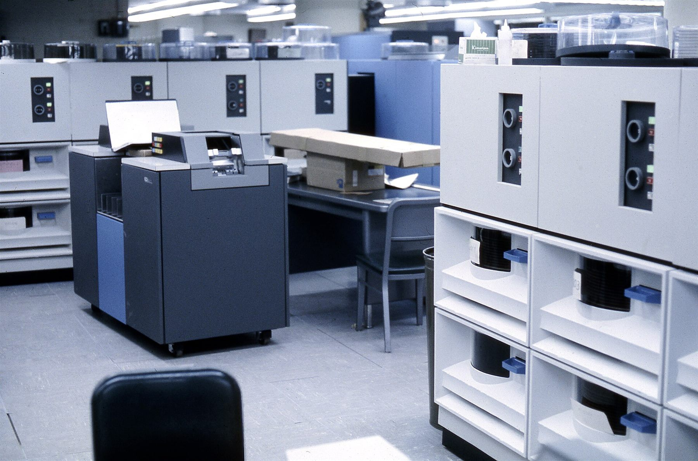
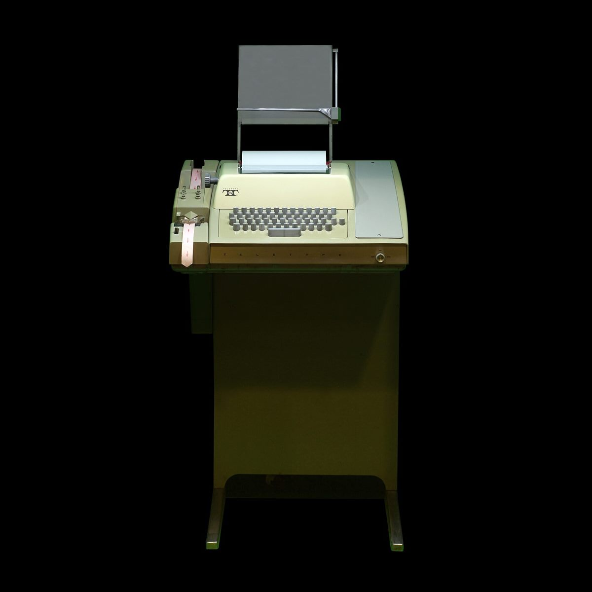
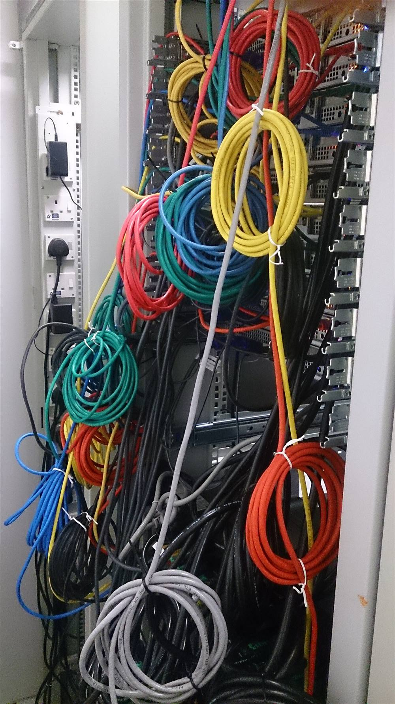

정보보안을 공부하는 학생, URIGG입니다. 리눅스와 네트워크를 처음부터 기록하고, 필요한 도구는 직접 만듭니다.
URIGG — Security,logged.
About
URIGG는 정보보안을 공부하는 학생입니다. Learning security from the ground up. 보안은 결국 시스템을 깊이 이해하는 일이라고 생각해서, 가장 아래층인 리눅스와 네트워크부터 차근차근 쌓고 있습니다. 공부한 내용은 티스토리 블로그 security.log에 연재하고, 같은 원고와 실습 기록을 GitHub 저장소에도 남깁니다.
「리눅스 제로부터」는 파일 구조에서 출발해 grep과 파이프, 로그 읽기까지 왔고, 「네트워크 첫걸음」은 IP 주소와 서브넷 마스크, DHCP를 지나는 중입니다. 2026년 10월에는 첫 자격증 목표인 리눅스마스터 2급 1차 시험을 치렀고, 다음 차례는 웹 해킹과 암호학입니다.
공부하다 필요한 도구가 생기면 직접 만듭니다. C++로 텍스트 RPG와 로그라이크를 만들었고, 요즘은 Claude와 함께 만든 캘린더 앱으로 하루를 관리합니다. Read the log →

security.log on GitHub
블로그 원고와 실습 기록, 자격증 오답 노트를 모아 두는 저장소입니다. 아래 목차는 저장소 README에서 바로 읽어 옵니다.

Cowork Calendar
Claude 코워크에서 대화로 짠 일정을 MCP로 올리면, Windows 바탕화면 위젯과 아이폰 캘린더에 그대로 표시됩니다. 제 하루를 관리하려고 직접 만든 개인용 캘린더입니다.


코워크 캘린더
Windows · 최신 버전
- 만들기Claude 코워크에서 대화로 일정을 짭니다
- 보내기MCP 서버(Cloudflare Workers)로 한 번에 올립니다
- 저장Supabase에 보관됩니다
- 보기Windows 바탕화면 위젯과 아이폰 캘린더
Tauri · React · Supabase · Cloudflare Workers